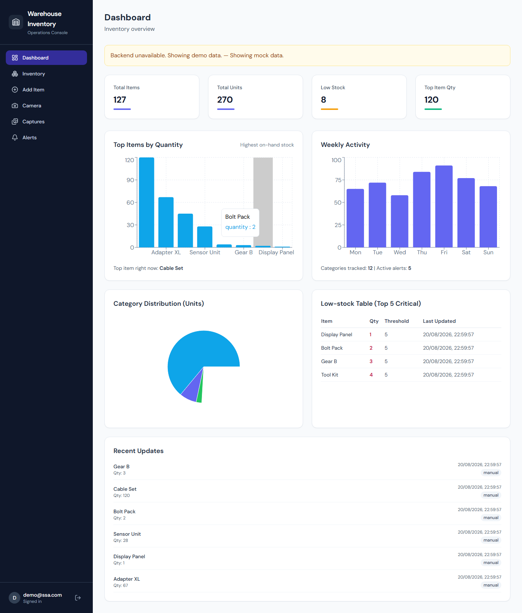
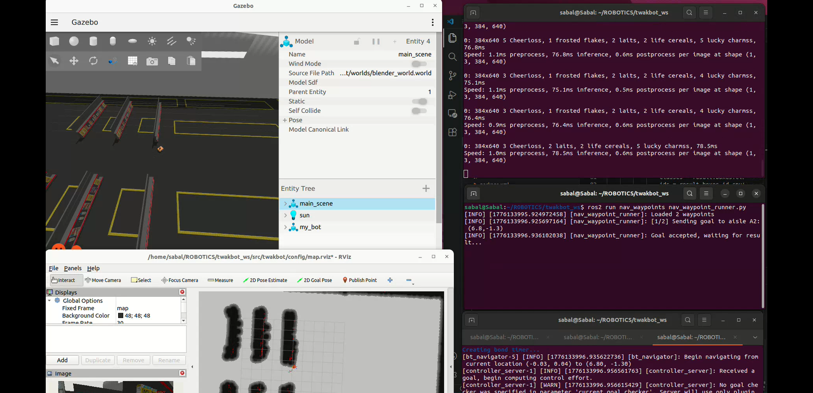
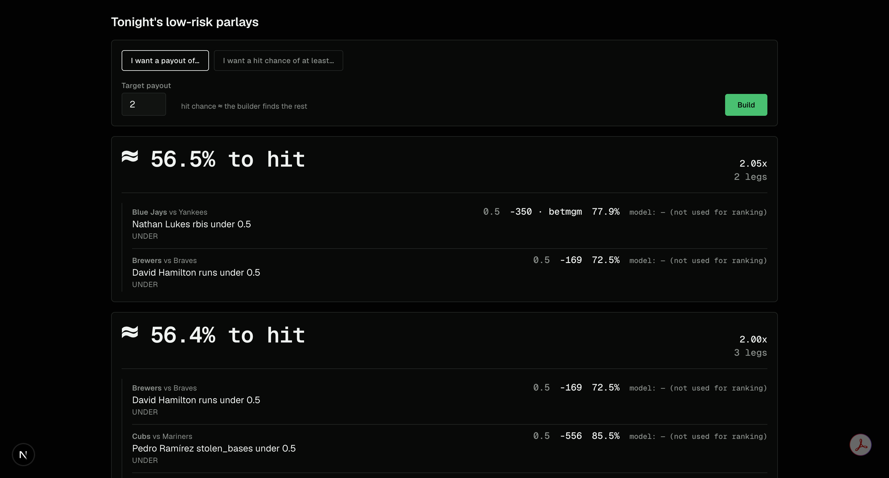
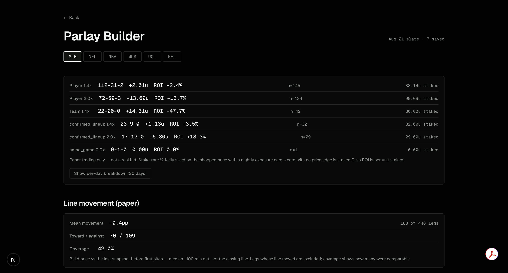
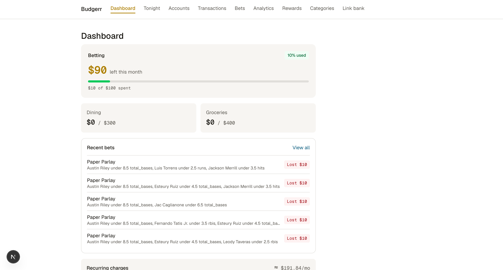
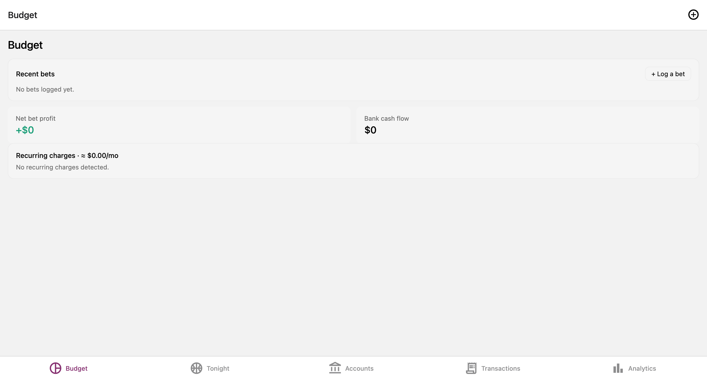
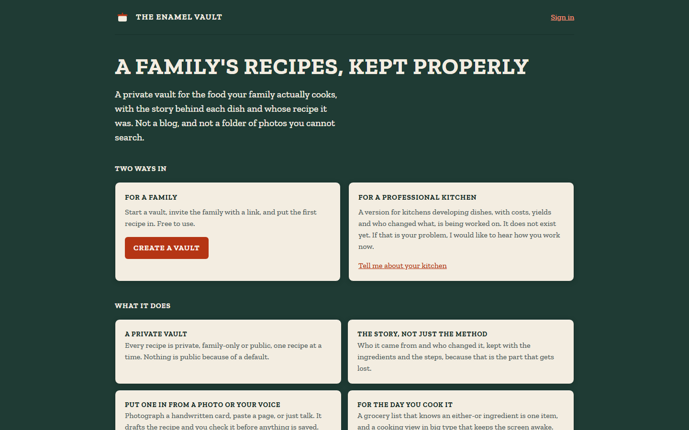
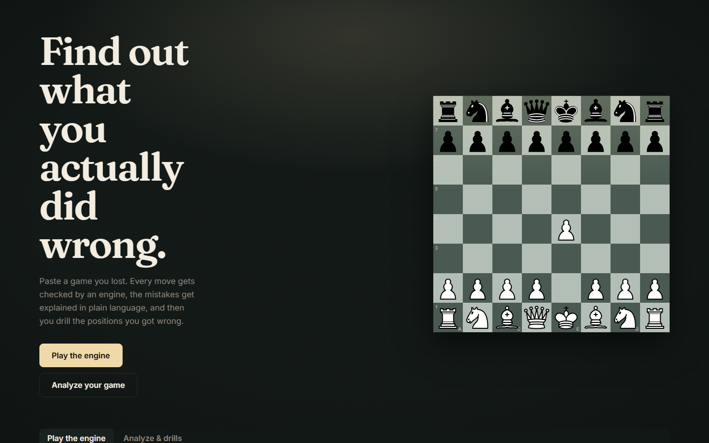

Thirteen projects, every figure measured in its own repository at the time of writing. Each entry is a short lead, four points on how it is built, and its stack. The field logs are what I got wrong in them.


A senior design team project: real-time warehouse item tracking, built by integrating a TensorFlow image-recognition model with a Node.js REST API and a PostgreSQL schema with user authentication, alongside a Gazebo simulation routing a robot between aisles over ROS2. About 4.6k lines across detector, API and simulation.


A market-ranked parlay builder on a paper ledger, live daily for MLB. It ranks legs by the de-vigged market price rather than by a model, searching for the combination of favourites that reaches a payout target with the highest chance of hitting: the least-bad combination, not a winner.


A full-stack personal finance platform: a FastAPI and PostgreSQL backend serving Next.js web and React Native (Expo) mobile clients, using the Plaid API for automated transaction sync. About 12k lines across three repositories.

A private recipe vault for families and a dish sign-off app for professional kitchens, on one codebase and four clients, live in production and in daily use. React, React Native and TypeScript over Supabase, served by one Cloudflare Worker: about 54.9k lines, 1,638 tests, 67 Postgres migrations.

Two tracks that meet at the UCI protocol: a chess engine written from scratch in C++ (about 3.3k lines, no chess libraries) and a beginner-focused coaching site that imports your games, flags the blunders and explains them in plain language.
A retrieval-augmented generation app that answers questions about public companies' annual reports, built from first principles with no RAG framework so that every layer is understood: EDGAR loading, HTML parsing by 10-K Item, chunking, embeddings, vector search, prompt assembly and generation.
Three repositories extending my research at the University of Dayton Research Institute, each a runnable, tested codebase behind a manuscript. The framing is deliberate throughout: the contribution is a measurable framework, never a headline verdict that DNA beats silicon.
Secure phone-to-workstation access to a coding agent, so a build that starts at my desk can continue from the bus. Everything rides a private Tailscale (WireGuard) mesh: no port forwarding, no firewall holes, and nothing exposed to the public internet.
Also
A zero-dependency Python CLI that offloads token-heavy grunt work from a paid Claude Code session to free or cheap models over any OpenAI-compatible endpoint. The worker reads, searches, and edits files but cannot run shell or git by design, so every change is reviewed as a diff before commit. About 3.6k lines with 80 pytest cases, and a benchmark in the repo that measures roughly 86% of the orchestrator's tokens saved per task.
A one-command, opinionated setup for a local-first knowledge stack: Obsidian plus Graphify plus claude-obsidian, wired into Claude Code and past the Windows/WSL permission gotcha that trips most people up, so the tools work together instead of needing to be debugged into place.
Cloud and desktop (RPA) flows that automate deterministic plumbing: a Downloads janitor that never overwrites and ships a dry run, a router filing generated resumes into their matching job folders, and a menu-driven PDF toolkit. Each ships its artifact and a rebuild recipe, so none of it is a black box.
A board for the repos you forgot about. Every other tracker asks you to type your status in; this one reads it out of git, so it cannot be stale about activity: branch, last commit, uncommitted and unpushed work are all derived on every run, and the only field you ever type is which cycle a project is in. A zero-dependency Python CLI, about 4k lines with 83 tests, plus an optional Cloudflare Worker that publishes the board as a page. Pre-release, not yet on PyPI.
An LSTM network forecasting Apple closing prices from 10+ years of historical data, with MinMaxScaler feature scaling, RMSE evaluation, and an actual-versus-predicted visualization. An early project, kept for the record.